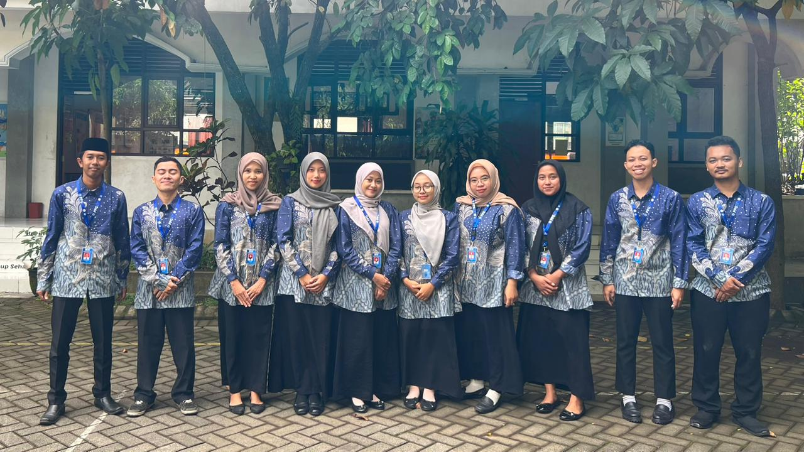
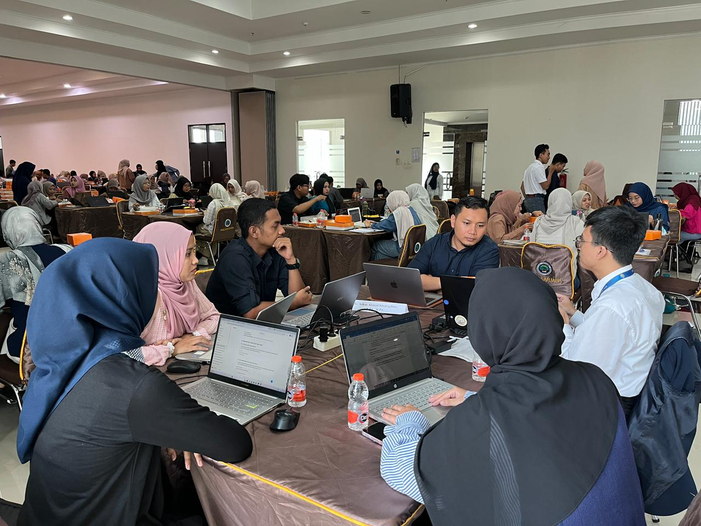
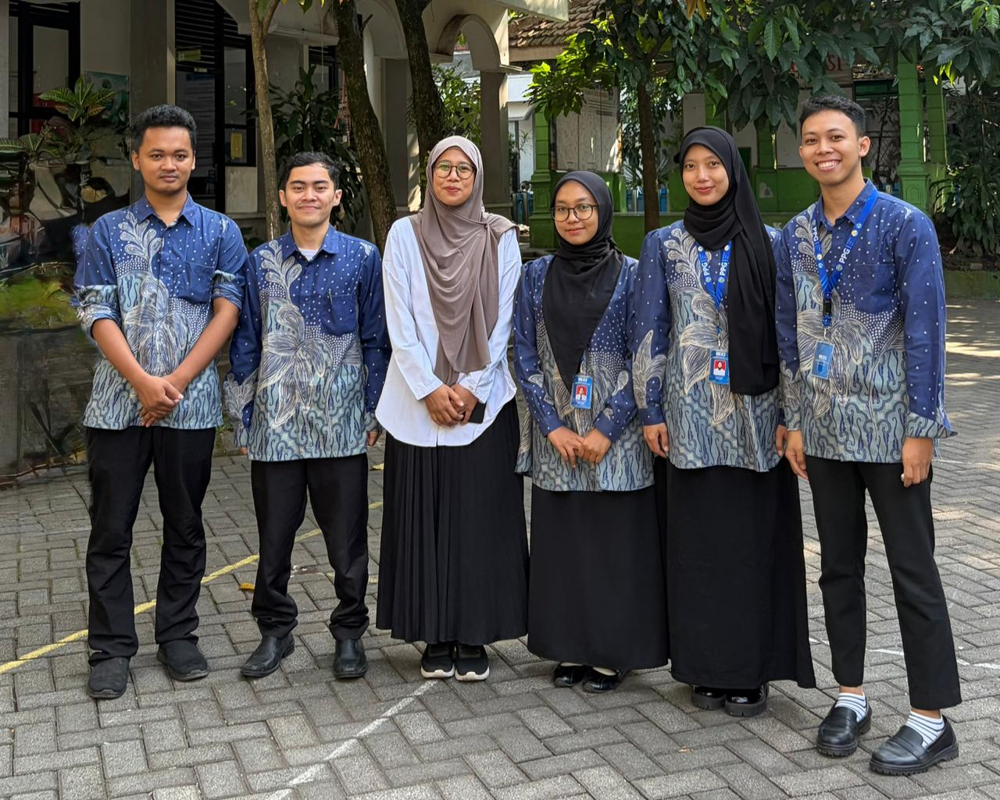
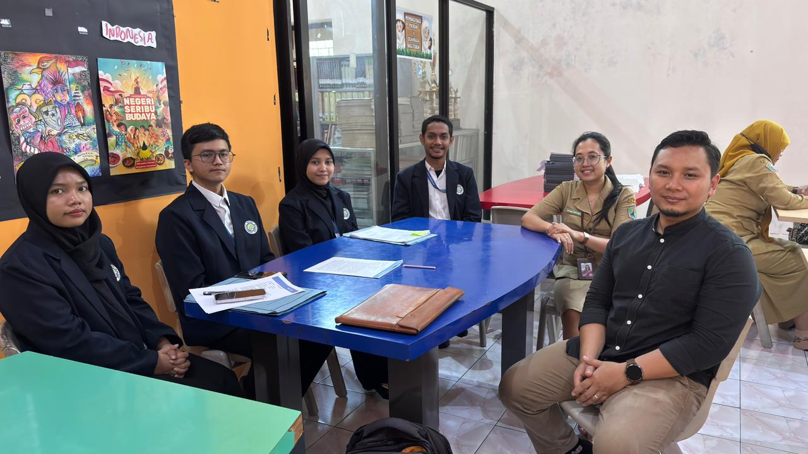
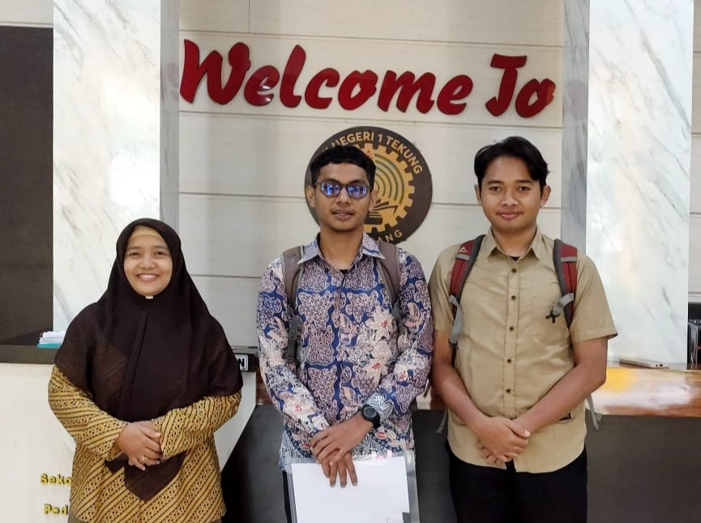
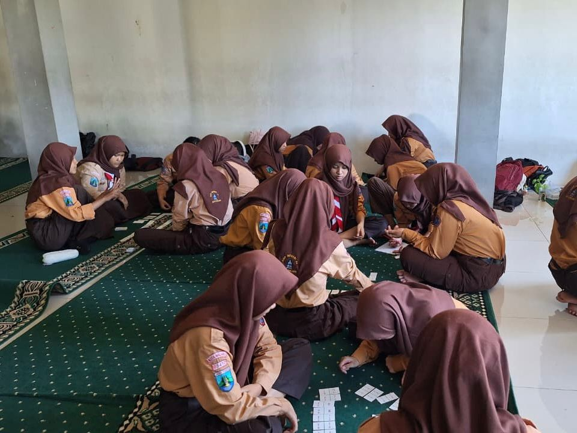
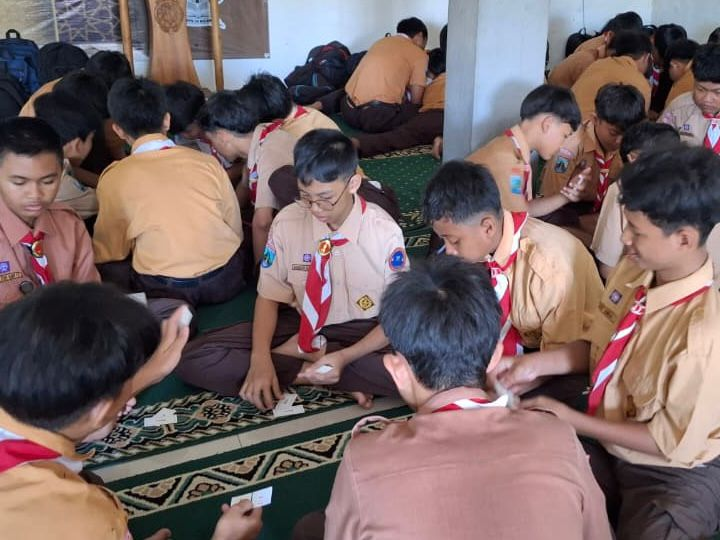
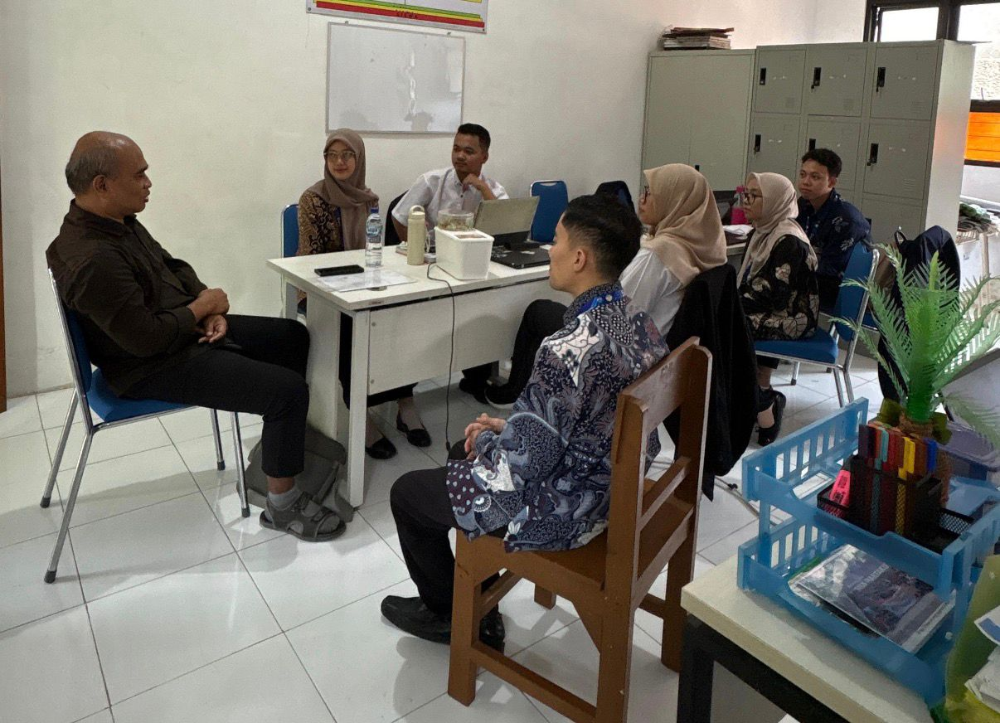
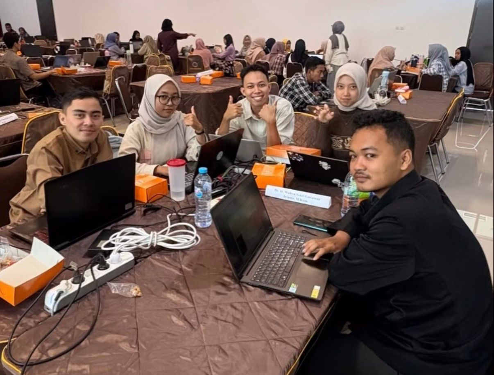
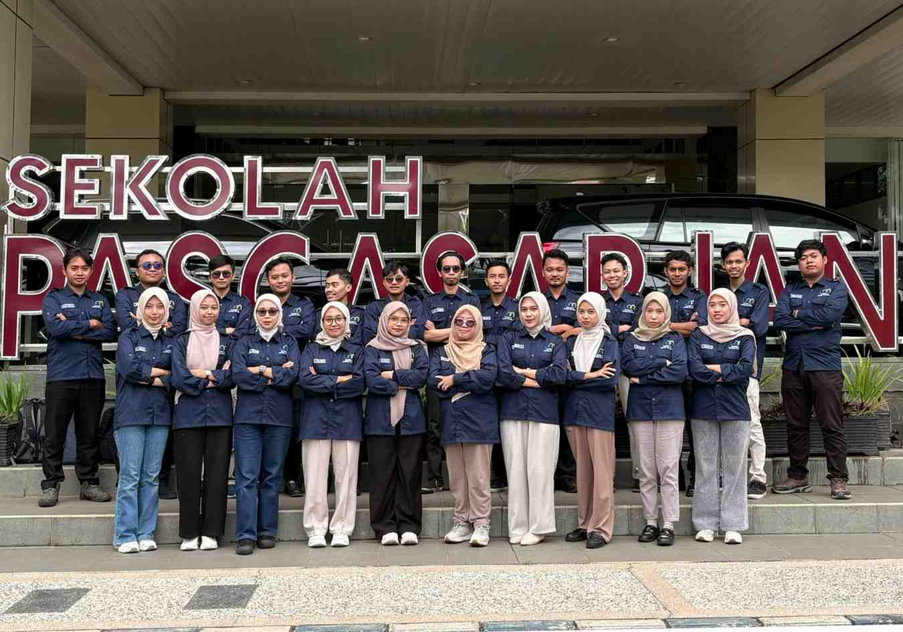

Dokumentasi kegiatan perkuliahan, PPL, praktik mengajar, serta aktivitas akademik selama mengikuti Program PPG Calon Guru Gel 1 Tahun 2026.










Refleksi terhadap perangkat pembelajaran yang telah dikembangkan.
Kendala utama dalam penyusunan perangkat pembelajaran adalah menyesuaikan materi dengan kebutuhan dan kemampuan peserta didik yang beragam. Selain itu, guru juga perlu membuat kegiatan pembelajaran yang menarik, interaktif, dan sesuai dengan kondisi kelas agar proses belajar dapat berjalan secara efektif.
Penyusunan perangkat pembelajaran dilakukan dengan pendekatan yang berpusat pada peserta didik, sehingga siswa didorong untuk aktif dalam proses pembelajaran melalui pengalaman belajar secara langsung. Model Project Based Learning (PJBL) diterapkan untuk melatih kemampuan berpikir kritis, kreativitas, kerja sama, serta keterampilan peserta didik dalam menyelesaikan sebuah proyek yang berkaitan dengan kehidupan sehari-hari. Selain itu, pembelajaran berdiferensiasi juga digunakan agar proses pembelajaran dapat menyesuaikan kebutuhan, minat, dan kemampuan belajar masing-masing peserta didik sehingga kegiatan belajar menjadi lebih efektif dan bermakna.
Keberhasilan implementasi perangkat pembelajaran dipengaruhi oleh perencanaan yang matang dan tersusun secara sistematis, mulai dari penentuan tujuan pembelajaran hingga proses evaluasi hasil belajar peserta didik. Pemanfaatan media pembelajaran berbasis digital juga menjadi salah satu faktor penting dalam meningkatkan minat, perhatian, dan keterlibatan siswa selama proses pembelajaran berlangsung. Selain itu, keaktifan peserta didik dalam kegiatan diskusi, praktik, dan penyelesaian proyek turut mendukung tercapainya tujuan pembelajaran secara lebih efektif dan optimal.
Perangkat pembelajaran yang disusun dirancang agar dapat menyesuaikan dengan kondisi dan karakteristik kelas yang beragam. Guru dapat mengembangkan atau menyesuaikan metode pembelajaran, media, serta tingkat kompleksitas materi sesuai dengan kebutuhan dan kemampuan peserta didik. Fleksibilitas tersebut memungkinkan proses pembelajaran tetap berlangsung secara efektif dan optimal pada berbagai kondisi kelas, baik dengan kemampuan siswa yang beragam maupun lingkungan belajar yang berbeda.
6 Mata Kuliah Pembelajaran
Belum tersedia
Modul Ajar & Perangkat
Dokumen Pembelajaran
Instrumen penilaian penyusunan perangkat pembelajaran dan praktik mengajar (3 siklus).